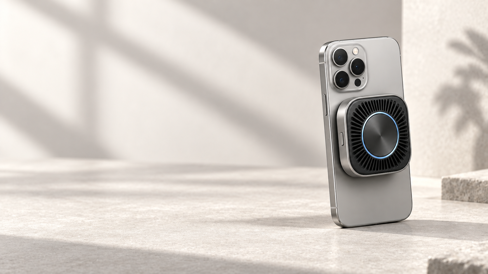
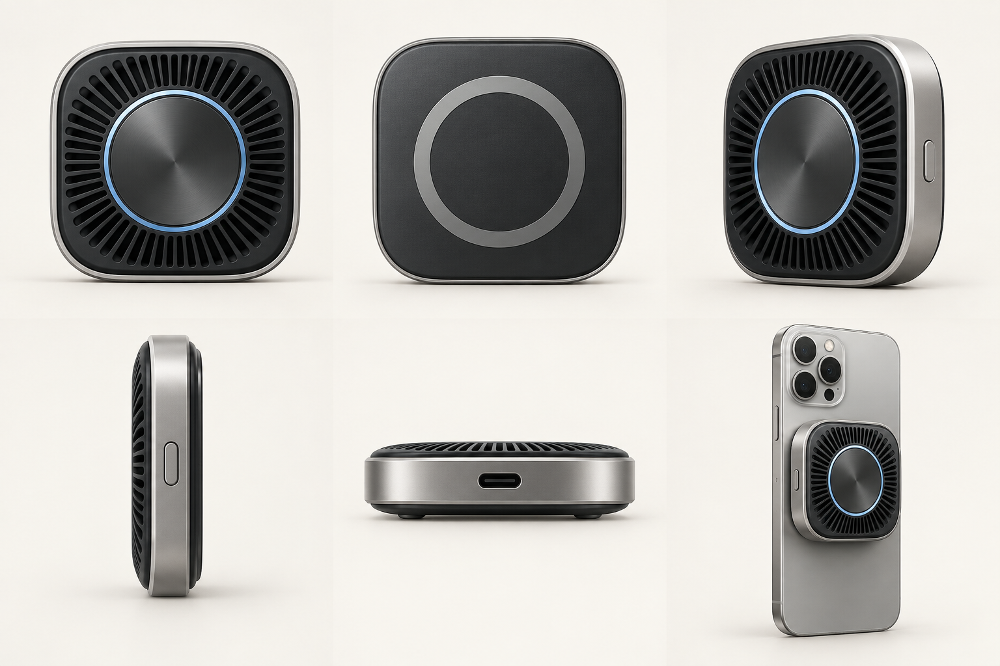
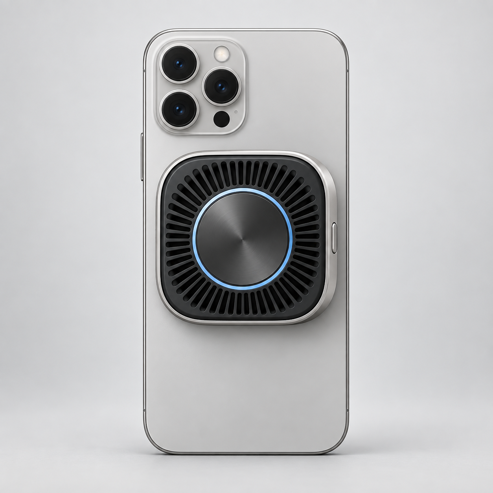
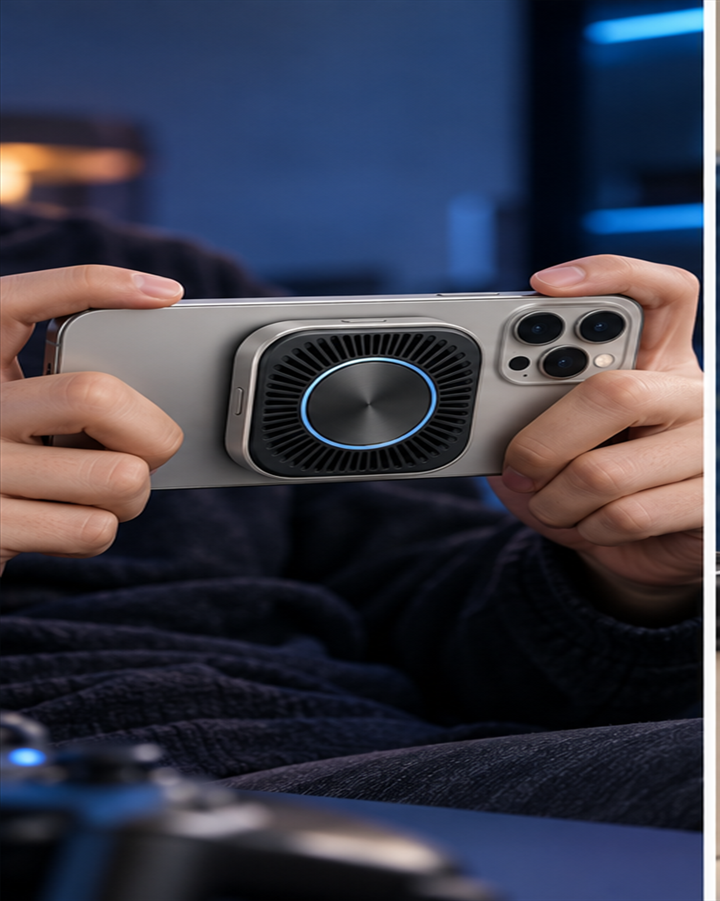
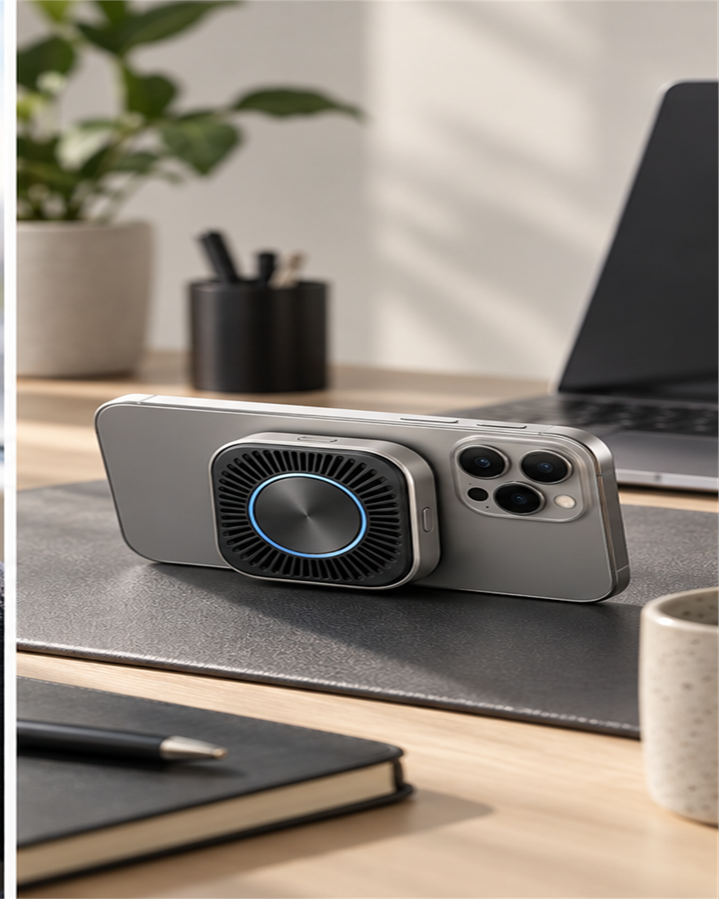
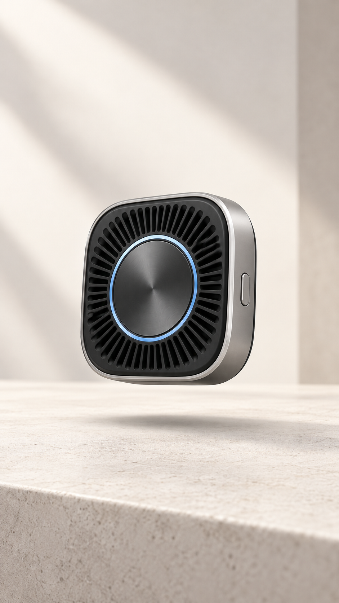
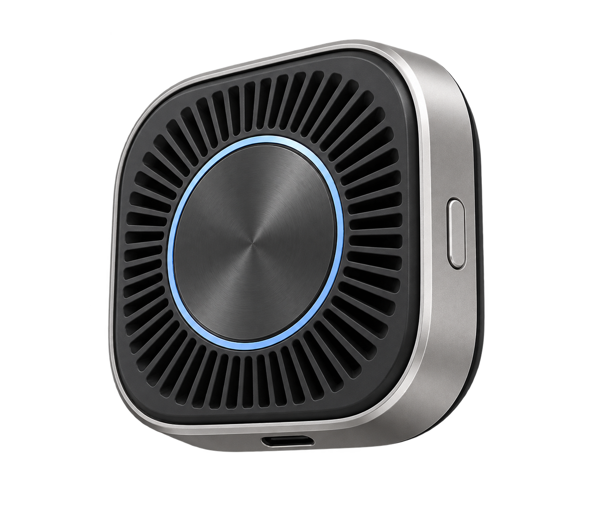

01TECH COLD
Tech cold
Black, silver, and cool blue light use tight edge lighting to reveal structure and metal.
Strength / structureRisk / sameness
NOVAIR FluxDock
Magnetic Mobile Cooling Concept
A concept visual system for a fictional magnetic smartphone cooler — built from demand analysis to multi-channel campaign output.

The brief is simple: make a small piece of hardware feel calm, capable, and at home in real life.
We mapped three recurring contexts: gaming, commuting, and desk work. The opportunity is not more spectacle, but a clear magnetic relationship, tactile material, and calm space.
Players want an accessory that stays present without taking attention away from the grip or the screen.
Young commuters care about footprint, visual order, and whether a product fits naturally into daily life.
Mobile workers want a calmer desk, a more focused information flow, and hardware that is easy to understand.
Black, silver, and cool blue light use tight edge lighting to reveal structure and metal.
Dark surfaces, speed, and restrained neon create social reach without hiding the object.
Light surfaces, open space, and clear material detail adapt across commerce and social crops.
Selection
The minimal direction keeps the product legible across commerce, social, and detail-page contexts. Tech Cold was rejected for hardware-category sameness; Motion Play was rejected because speed lines risked hiding the product and narrowed the audience.

Silhouette
Rounded square / silver rim / graphite back
Controls
One side button / one centered USB-C port
Consistency
One master reference for every scene and crop
Magnetic fit. Quiet focus.
HUMAN LAYOUT / ONE COPY SETLock the object first, then explore atmosphere and light.
Reject geometry drift, excessive effects, and weak channel fit.
Re-crop, typeset, unify color, and proof every word by hand.
Translate one visual language into 16:9, 1:1, 4:5, and 9:16.
Fix the silhouette, controls, interface, and material.
Test composition and negative space across gaming, commuting, and desk work.
Crop to ratio, unify copy, and check safe zones and legibility.




Copy is typeset in the layout layer; AI source images and the before/after refinement record remain available for review.
When long sessions warm up your phone, focus can break. FluxDock explores a compact magnetic cooling form designed for everyday mobile use.

Designed around one clear relationship: phone, cooler, and the person using both.
Three situations, one consistent object.
NOVAIR FluxDock
AI is the visual accelerator. The design system is the part that makes the result usable.
I would take the next round into physical prototyping: verify the magnetic interface, thermal path, acoustics, case compatibility, and the visual behavior of the product under real light.